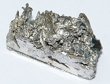

Ytterbium
|  | |||||||||||||||||||||||||||||||||||||||||||||||||||||||||||||||||||||||||||||||||||||||||||||||||||||||||||||||||||||||||||||||||||||||||||||||||||||||||||||||||||||||||||||||||||||||||||||||||||||||||||||||||||||||||||||||||||||
| General properties | |||||||||||||||||||||||||||||||||||||||||||||||||||||||||||||||||||||||||||||||||||||||||||||||||||||||||||||||||||||||||||||||||||||||||||||||||||||||||||||||||||||||||||||||||||||||||||||||||||||||||||||||||||||||||||||||||||||
|---|---|---|---|---|---|---|---|---|---|---|---|---|---|---|---|---|---|---|---|---|---|---|---|---|---|---|---|---|---|---|---|---|---|---|---|---|---|---|---|---|---|---|---|---|---|---|---|---|---|---|---|---|---|---|---|---|---|---|---|---|---|---|---|---|---|---|---|---|---|---|---|---|---|---|---|---|---|---|---|---|---|---|---|---|---|---|---|---|---|---|---|---|---|---|---|---|---|---|---|---|---|---|---|---|---|---|---|---|---|---|---|---|---|---|---|---|---|---|---|---|---|---|---|---|---|---|---|---|---|---|---|---|---|---|---|---|---|---|---|---|---|---|---|---|---|---|---|---|---|---|---|---|---|---|---|---|---|---|---|---|---|---|---|---|---|---|---|---|---|---|---|---|---|---|---|---|---|---|---|---|---|---|---|---|---|---|---|---|---|---|---|---|---|---|---|---|---|---|---|---|---|---|---|---|---|---|---|---|---|---|---|---|---|---|---|---|---|---|---|---|---|---|---|---|---|---|---|---|---|
| Name, symbol | ytterbium, Yb | ||||||||||||||||||||||||||||||||||||||||||||||||||||||||||||||||||||||||||||||||||||||||||||||||||||||||||||||||||||||||||||||||||||||||||||||||||||||||||||||||||||||||||||||||||||||||||||||||||||||||||||||||||||||||||||||||||||
| Pronunciation | /ɨˈtɜrbiəm/ i-TUR-bee-əm |
||||||||||||||||||||||||||||||||||||||||||||||||||||||||||||||||||||||||||||||||||||||||||||||||||||||||||||||||||||||||||||||||||||||||||||||||||||||||||||||||||||||||||||||||||||||||||||||||||||||||||||||||||||||||||||||||||||
| Appearance | silvery white | ||||||||||||||||||||||||||||||||||||||||||||||||||||||||||||||||||||||||||||||||||||||||||||||||||||||||||||||||||||||||||||||||||||||||||||||||||||||||||||||||||||||||||||||||||||||||||||||||||||||||||||||||||||||||||||||||||||
| Ytterbium in the periodic table | |||||||||||||||||||||||||||||||||||||||||||||||||||||||||||||||||||||||||||||||||||||||||||||||||||||||||||||||||||||||||||||||||||||||||||||||||||||||||||||||||||||||||||||||||||||||||||||||||||||||||||||||||||||||||||||||||||||
|
|||||||||||||||||||||||||||||||||||||||||||||||||||||||||||||||||||||||||||||||||||||||||||||||||||||||||||||||||||||||||||||||||||||||||||||||||||||||||||||||||||||||||||||||||||||||||||||||||||||||||||||||||||||||||||||||||||||
| Atomic number | 70 | ||||||||||||||||||||||||||||||||||||||||||||||||||||||||||||||||||||||||||||||||||||||||||||||||||||||||||||||||||||||||||||||||||||||||||||||||||||||||||||||||||||||||||||||||||||||||||||||||||||||||||||||||||||||||||||||||||||
| Standard atomic weight (±) | 173.054(5)[1] | ||||||||||||||||||||||||||||||||||||||||||||||||||||||||||||||||||||||||||||||||||||||||||||||||||||||||||||||||||||||||||||||||||||||||||||||||||||||||||||||||||||||||||||||||||||||||||||||||||||||||||||||||||||||||||||||||||||
| Element category | lanthanide | ||||||||||||||||||||||||||||||||||||||||||||||||||||||||||||||||||||||||||||||||||||||||||||||||||||||||||||||||||||||||||||||||||||||||||||||||||||||||||||||||||||||||||||||||||||||||||||||||||||||||||||||||||||||||||||||||||||
| Group, block | group n/a, f-block | ||||||||||||||||||||||||||||||||||||||||||||||||||||||||||||||||||||||||||||||||||||||||||||||||||||||||||||||||||||||||||||||||||||||||||||||||||||||||||||||||||||||||||||||||||||||||||||||||||||||||||||||||||||||||||||||||||||
| Period | period 6 | ||||||||||||||||||||||||||||||||||||||||||||||||||||||||||||||||||||||||||||||||||||||||||||||||||||||||||||||||||||||||||||||||||||||||||||||||||||||||||||||||||||||||||||||||||||||||||||||||||||||||||||||||||||||||||||||||||||
| Electron configuration | [Xe] 4f14 6s2 | ||||||||||||||||||||||||||||||||||||||||||||||||||||||||||||||||||||||||||||||||||||||||||||||||||||||||||||||||||||||||||||||||||||||||||||||||||||||||||||||||||||||||||||||||||||||||||||||||||||||||||||||||||||||||||||||||||||
| per shell | 2, 8, 18, 32, 8, 2 | ||||||||||||||||||||||||||||||||||||||||||||||||||||||||||||||||||||||||||||||||||||||||||||||||||||||||||||||||||||||||||||||||||||||||||||||||||||||||||||||||||||||||||||||||||||||||||||||||||||||||||||||||||||||||||||||||||||
| Physical properties | |||||||||||||||||||||||||||||||||||||||||||||||||||||||||||||||||||||||||||||||||||||||||||||||||||||||||||||||||||||||||||||||||||||||||||||||||||||||||||||||||||||||||||||||||||||||||||||||||||||||||||||||||||||||||||||||||||||
| Phase | solid | ||||||||||||||||||||||||||||||||||||||||||||||||||||||||||||||||||||||||||||||||||||||||||||||||||||||||||||||||||||||||||||||||||||||||||||||||||||||||||||||||||||||||||||||||||||||||||||||||||||||||||||||||||||||||||||||||||||
| Melting point | 1097 K (824 °C, 1515 °F) | ||||||||||||||||||||||||||||||||||||||||||||||||||||||||||||||||||||||||||||||||||||||||||||||||||||||||||||||||||||||||||||||||||||||||||||||||||||||||||||||||||||||||||||||||||||||||||||||||||||||||||||||||||||||||||||||||||||
| Boiling point | 1469 K (1196 °C, 2185 °F) | ||||||||||||||||||||||||||||||||||||||||||||||||||||||||||||||||||||||||||||||||||||||||||||||||||||||||||||||||||||||||||||||||||||||||||||||||||||||||||||||||||||||||||||||||||||||||||||||||||||||||||||||||||||||||||||||||||||
| Density near r.t. | 6.90 g·cm−3 | ||||||||||||||||||||||||||||||||||||||||||||||||||||||||||||||||||||||||||||||||||||||||||||||||||||||||||||||||||||||||||||||||||||||||||||||||||||||||||||||||||||||||||||||||||||||||||||||||||||||||||||||||||||||||||||||||||||
| when liquid, at m.p. | 6.21 g·cm−3 | ||||||||||||||||||||||||||||||||||||||||||||||||||||||||||||||||||||||||||||||||||||||||||||||||||||||||||||||||||||||||||||||||||||||||||||||||||||||||||||||||||||||||||||||||||||||||||||||||||||||||||||||||||||||||||||||||||||
| Heat of fusion | 7.66 kJ·mol−1 | ||||||||||||||||||||||||||||||||||||||||||||||||||||||||||||||||||||||||||||||||||||||||||||||||||||||||||||||||||||||||||||||||||||||||||||||||||||||||||||||||||||||||||||||||||||||||||||||||||||||||||||||||||||||||||||||||||||
| Heat of vaporization | 129 kJ·mol−1 | ||||||||||||||||||||||||||||||||||||||||||||||||||||||||||||||||||||||||||||||||||||||||||||||||||||||||||||||||||||||||||||||||||||||||||||||||||||||||||||||||||||||||||||||||||||||||||||||||||||||||||||||||||||||||||||||||||||
| Molar heat capacity | 26.74 J·mol−1·K−1 | ||||||||||||||||||||||||||||||||||||||||||||||||||||||||||||||||||||||||||||||||||||||||||||||||||||||||||||||||||||||||||||||||||||||||||||||||||||||||||||||||||||||||||||||||||||||||||||||||||||||||||||||||||||||||||||||||||||
vapor pressure
|
|||||||||||||||||||||||||||||||||||||||||||||||||||||||||||||||||||||||||||||||||||||||||||||||||||||||||||||||||||||||||||||||||||||||||||||||||||||||||||||||||||||||||||||||||||||||||||||||||||||||||||||||||||||||||||||||||||||
| Atomic properties | |||||||||||||||||||||||||||||||||||||||||||||||||||||||||||||||||||||||||||||||||||||||||||||||||||||||||||||||||||||||||||||||||||||||||||||||||||||||||||||||||||||||||||||||||||||||||||||||||||||||||||||||||||||||||||||||||||||
| Oxidation states | 3, 2, 1 (a basic oxide) | ||||||||||||||||||||||||||||||||||||||||||||||||||||||||||||||||||||||||||||||||||||||||||||||||||||||||||||||||||||||||||||||||||||||||||||||||||||||||||||||||||||||||||||||||||||||||||||||||||||||||||||||||||||||||||||||||||||
| Electronegativity | Pauling scale: 1.1 (?) | ||||||||||||||||||||||||||||||||||||||||||||||||||||||||||||||||||||||||||||||||||||||||||||||||||||||||||||||||||||||||||||||||||||||||||||||||||||||||||||||||||||||||||||||||||||||||||||||||||||||||||||||||||||||||||||||||||||
| Ionization energies | 1st: 603.4 kJ·mol−1 2nd: 1174.8 kJ·mol−1 3rd: 2417 kJ·mol−1 |
||||||||||||||||||||||||||||||||||||||||||||||||||||||||||||||||||||||||||||||||||||||||||||||||||||||||||||||||||||||||||||||||||||||||||||||||||||||||||||||||||||||||||||||||||||||||||||||||||||||||||||||||||||||||||||||||||||
| Atomic radius | empirical: 176 pm | ||||||||||||||||||||||||||||||||||||||||||||||||||||||||||||||||||||||||||||||||||||||||||||||||||||||||||||||||||||||||||||||||||||||||||||||||||||||||||||||||||||||||||||||||||||||||||||||||||||||||||||||||||||||||||||||||||||
| Covalent radius | 187±8 pm | ||||||||||||||||||||||||||||||||||||||||||||||||||||||||||||||||||||||||||||||||||||||||||||||||||||||||||||||||||||||||||||||||||||||||||||||||||||||||||||||||||||||||||||||||||||||||||||||||||||||||||||||||||||||||||||||||||||
| Miscellanea | |||||||||||||||||||||||||||||||||||||||||||||||||||||||||||||||||||||||||||||||||||||||||||||||||||||||||||||||||||||||||||||||||||||||||||||||||||||||||||||||||||||||||||||||||||||||||||||||||||||||||||||||||||||||||||||||||||||
| Crystal structure | face-centered cubic (fcc)
 |
||||||||||||||||||||||||||||||||||||||||||||||||||||||||||||||||||||||||||||||||||||||||||||||||||||||||||||||||||||||||||||||||||||||||||||||||||||||||||||||||||||||||||||||||||||||||||||||||||||||||||||||||||||||||||||||||||||
| Speed of sound thin rod | 1590 m·s−1 (at 20 °C) | ||||||||||||||||||||||||||||||||||||||||||||||||||||||||||||||||||||||||||||||||||||||||||||||||||||||||||||||||||||||||||||||||||||||||||||||||||||||||||||||||||||||||||||||||||||||||||||||||||||||||||||||||||||||||||||||||||||
| Thermal expansion | β, poly: 26.3 µm·m−1·K−1 (r.t.) | ||||||||||||||||||||||||||||||||||||||||||||||||||||||||||||||||||||||||||||||||||||||||||||||||||||||||||||||||||||||||||||||||||||||||||||||||||||||||||||||||||||||||||||||||||||||||||||||||||||||||||||||||||||||||||||||||||||
| Thermal conductivity | 38.5 W·m−1·K−1 | ||||||||||||||||||||||||||||||||||||||||||||||||||||||||||||||||||||||||||||||||||||||||||||||||||||||||||||||||||||||||||||||||||||||||||||||||||||||||||||||||||||||||||||||||||||||||||||||||||||||||||||||||||||||||||||||||||||
| Electrical resistivity | β, poly: 0.250 µΩ·m (at r.t.) | ||||||||||||||||||||||||||||||||||||||||||||||||||||||||||||||||||||||||||||||||||||||||||||||||||||||||||||||||||||||||||||||||||||||||||||||||||||||||||||||||||||||||||||||||||||||||||||||||||||||||||||||||||||||||||||||||||||
| Magnetic ordering | paramagnetic | ||||||||||||||||||||||||||||||||||||||||||||||||||||||||||||||||||||||||||||||||||||||||||||||||||||||||||||||||||||||||||||||||||||||||||||||||||||||||||||||||||||||||||||||||||||||||||||||||||||||||||||||||||||||||||||||||||||
| Young's modulus | β form: 23.9 GPa | ||||||||||||||||||||||||||||||||||||||||||||||||||||||||||||||||||||||||||||||||||||||||||||||||||||||||||||||||||||||||||||||||||||||||||||||||||||||||||||||||||||||||||||||||||||||||||||||||||||||||||||||||||||||||||||||||||||
| Shear modulus | β form: 9.9 GPa | ||||||||||||||||||||||||||||||||||||||||||||||||||||||||||||||||||||||||||||||||||||||||||||||||||||||||||||||||||||||||||||||||||||||||||||||||||||||||||||||||||||||||||||||||||||||||||||||||||||||||||||||||||||||||||||||||||||
| Bulk modulus | β form: 30.5 GPa | ||||||||||||||||||||||||||||||||||||||||||||||||||||||||||||||||||||||||||||||||||||||||||||||||||||||||||||||||||||||||||||||||||||||||||||||||||||||||||||||||||||||||||||||||||||||||||||||||||||||||||||||||||||||||||||||||||||
| Poisson ratio | β form: 0.207 | ||||||||||||||||||||||||||||||||||||||||||||||||||||||||||||||||||||||||||||||||||||||||||||||||||||||||||||||||||||||||||||||||||||||||||||||||||||||||||||||||||||||||||||||||||||||||||||||||||||||||||||||||||||||||||||||||||||
| Vickers hardness | 205–250 MPa | ||||||||||||||||||||||||||||||||||||||||||||||||||||||||||||||||||||||||||||||||||||||||||||||||||||||||||||||||||||||||||||||||||||||||||||||||||||||||||||||||||||||||||||||||||||||||||||||||||||||||||||||||||||||||||||||||||||
| Brinell hardness | 340–440 MPa | ||||||||||||||||||||||||||||||||||||||||||||||||||||||||||||||||||||||||||||||||||||||||||||||||||||||||||||||||||||||||||||||||||||||||||||||||||||||||||||||||||||||||||||||||||||||||||||||||||||||||||||||||||||||||||||||||||||
| CAS Registry Number | 7440-64-4 | ||||||||||||||||||||||||||||||||||||||||||||||||||||||||||||||||||||||||||||||||||||||||||||||||||||||||||||||||||||||||||||||||||||||||||||||||||||||||||||||||||||||||||||||||||||||||||||||||||||||||||||||||||||||||||||||||||||
| History | |||||||||||||||||||||||||||||||||||||||||||||||||||||||||||||||||||||||||||||||||||||||||||||||||||||||||||||||||||||||||||||||||||||||||||||||||||||||||||||||||||||||||||||||||||||||||||||||||||||||||||||||||||||||||||||||||||||
| Naming | after Ytterby (Sweden), where it was mined | ||||||||||||||||||||||||||||||||||||||||||||||||||||||||||||||||||||||||||||||||||||||||||||||||||||||||||||||||||||||||||||||||||||||||||||||||||||||||||||||||||||||||||||||||||||||||||||||||||||||||||||||||||||||||||||||||||||
| Discovery | Jean Charles Galissard de Marignac (1878) | ||||||||||||||||||||||||||||||||||||||||||||||||||||||||||||||||||||||||||||||||||||||||||||||||||||||||||||||||||||||||||||||||||||||||||||||||||||||||||||||||||||||||||||||||||||||||||||||||||||||||||||||||||||||||||||||||||||
| First isolation | Georges Urbain (1907) | ||||||||||||||||||||||||||||||||||||||||||||||||||||||||||||||||||||||||||||||||||||||||||||||||||||||||||||||||||||||||||||||||||||||||||||||||||||||||||||||||||||||||||||||||||||||||||||||||||||||||||||||||||||||||||||||||||||
| Most stable isotopes | |||||||||||||||||||||||||||||||||||||||||||||||||||||||||||||||||||||||||||||||||||||||||||||||||||||||||||||||||||||||||||||||||||||||||||||||||||||||||||||||||||||||||||||||||||||||||||||||||||||||||||||||||||||||||||||||||||||
|
|||||||||||||||||||||||||||||||||||||||||||||||||||||||||||||||||||||||||||||||||||||||||||||||||||||||||||||||||||||||||||||||||||||||||||||||||||||||||||||||||||||||||||||||||||||||||||||||||||||||||||||||||||||||||||||||||||||
| Decay modes in parentheses are predicted, but have not yet been observed | |||||||||||||||||||||||||||||||||||||||||||||||||||||||||||||||||||||||||||||||||||||||||||||||||||||||||||||||||||||||||||||||||||||||||||||||||||||||||||||||||||||||||||||||||||||||||||||||||||||||||||||||||||||||||||||||||||||
{kind=link}
Ytterbium is a chemical element with symbol Yb and atomic number 70. It is the fourteenth and penultimate element in the lanthanide series, which is the basis of the relative stability of the +2 oxidation state. However, like the other lanthanides, the most common oxidation state is +3, seen in its oxide, halides and other compounds. In aqueous solution, like compounds of other late lanthanides, soluble ytterbium compounds form complexes with nine water molecules. Because of its closed-shell electron configuration, its density and melting and boiling points differ from those of the other lanthanides.
In 1878, the Swiss chemist Jean Charles Galissard de Marignac separated in the rare earth "erbia" another independent component, which he called "ytterbia", for Ytterby, the village in Sweden near where he found the new component of erbium. He suspected that ytterbia was a compound of a new element that he called "ytterbium" (in total, four elements were named after the village, the others being yttrium, terbium and erbium). In 1907, the new earth "lutecia" was separated from ytterbia, from which the element "lutecium" (now lutetium) was extracted by Georges Urbain, Carl Auer von Welsbach, and Charles James. After some discussion, Marignac's name "ytterbium" was retained. A relatively pure sample of the metal was obtained only in 1953. At present, ytterbium is mainly used as a dopant of stainless steel or active laser media, and less often as a gamma ray source.
Natural ytterbium is a mixture of seven stable isotopes, which altogether are present at concentrations of 3 parts per million. This element is mined in China, the United States, Brazil, and India in form of the minerals monazite, euxenite, and xenotime. The ytterbium concentration is low, because the element is found among many other rare earth elements; moreover, it is among the least abundant ones. Once extracted and prepared, ytterbium is somewhat hazardous as an eye and skin irritant. The metal is a fire and explosion hazard.
Contents
[hide]Characteristics[edit]
Physical properties[edit]
Ytterbium is a soft, malleable and ductile chemical element that displays a bright silvery luster when in its pure form. It is a rare earth element, and it is readily attacked and dissolved by the strong mineral acids. It reacts slowly with cold water and it oxidizes slowly in air.[2]
Ytterbium has three allotropes labeled by the Greek letters alpha, beta and gamma; their transformation temperatures are −13 °C and 795 °C,[2] although the exact transformation temperature depends on the pressure and stress.[3] The beta allotrope exists at room temperature, and it has a face-centered cubic crystal structure. The high-temperature gamma allotrope has a body-centered cubic crystalline structure.[2] The alpha allotrope has a hexagonal crystalline structure and is stable at low temperatures.[4] Normally, the beta allotrope has a metallic electrical conductivity, but it becomes a semiconductor when exposed to a pressure of about 16,000 atmospheres (1.6 GPa). Its electrical resistivity increases ten times upon compression to 39,000 atmospheres (3.9 GPa), but then drops to about 10% of its room-temperature resistivity at about 40,000 atm (4.0 GPa).[2][5]
In contrast with the other rare-earth metals, which usually have antiferromagnetic and/or ferromagnetic properties at low temperatures, ytterbium is paramagnetic at temperatures above 1.0 kelvin.[6] However, the alpha allotrope is diamagnetic.[3] With a melting point of 824 °C and a boiling point of 1196 °C, ytterbium has the smallest liquid range of all the metals.[2]
Contrary to most other lanthanides, which have a close-packed hexagonal lattice, ytterbium crystallizes in the face-centered cubic structure. As a result, its density (6.973 g/cm3) is significantly lower than, e.g., those of the neighboring elements thulium (9.32 g/cm3) and lutetium (9.841 g/cm3). The melting and boiling points of ytterbium are also significantly lower than those of thulium and lutetium. These properties stem from the closed-shell electron configuration of ytterbium ([Xe] 4f14 6s2), which causes only the two 6s electrons to be available for metallic bonding (in contrast to the other lanthanides where three electrons are available).[4]
Chemical properties[edit]
Ytterbium metal tarnishes slowly in air. Finely dispersed ytterbium readily oxidizes in air and under oxygen. Mixtures of powdered ytterbium with polytetrafluoroethylene or hexachloroethane burn with a luminous emerald-green flame.[7] Ytterbium reacts with hydrogen to form various non-stoichiometric hydrides. Ytterbium dissolves slowly in water, but quickly in acids, liberating hydrogen gas.[4]
Ytterbium is quite electropositive, and it reacts slowly with cold water and quite quickly with hot water to form ytterbium(III) hydroxide:[8]
- 2 Yb (s) + 6 H2O (l) → 2 Yb(OH)3 (aq) + 3 H2 (g)
Ytterbium reacts with all the halogens:[8]
- 2 Yb (s) + 3 F2 (g) → 2 YbF3 (s) [white]
- 2 Yb (s) + 3 Cl2 (g) → 2 YbCl3 (s) [white]
- 2 Yb (s) + 3 Br2 (g) → 2 YbBr3 (s) [white]
- 2 Yb (s) + 3 I2 (g) → 2 YbI3 (s) [white]
The ytterbium(III) ion absorbs light in the near infrared range of wavelengths, but not in visible light, so the mineral ytterbia, Yb2O3, is white in color and the salts of ytterbium are also colorless. Ytterbium dissolves readily in dilute sulfuric acid to form solutions that contain the colorless Yb(III) ions, which exist as nonahydrate complexes:[8]
- 2 Yb (s) + 3 H2SO4 (aq) → 2 [Yb(H2O)9]3+ (aq) + 3 SO2−
4 (aq) + 3 H2 (g)
Yb(II) vs. Yb(III)[edit]
Although usually trivalent, ytterbium readily forms divalent compounds. This behavior is unusual to most lanthanides, which almost exclusively form compounds with an oxidation state of +3. The +2 state has a valence electron configuration of 4f14 because the fully filled f-shell gives more stability. The yellow-green ytterbium(II) ion is a very strong reducing agent and decomposes water, releasing hydrogen gas, and thus only the colorless ytterbium(III) ion occurs in aqueous solution. Samarium and thulium also behave this way in the +2 state, but europium(II) is stable in aqueous solution. Ytterbium metal behaves similarly to europium metal and the alkaline earth metals, dissolving in ammonia to form blue electride salts.[4]
Isotopes[edit]
Natural ytterbium is composed of seven stable isotopes: 168Yb, 170Yb, 171Yb, 172Yb, 173Yb, 174Yb, and 176Yb, with 174Yb being the most abundant isotope, at 31.8% of the natural abundance). 27 radioisotopes have been observed, with the most stable ones being 169Yb with a half-life of 32.0 days, 175Yb with a half-life of 4.18 days, and 166Yb with a half-life of 56.7 hours. All of its remaining radioactive isotopes have half-lives that are less than two hours and most of these have half-lives are less than 20 minutes. Ytterbium also has 12 meta states, with the most stable being 169mYb (t1/2 46 seconds).[9][10]
The isotopes of ytterbium range in atomic weight from 147.9674 atomic mass unit (u) for 148Yb to 180.9562 u for 181Yb. The primary decay mode of ytterbium isotopes lighter than the most abundant stable isotope, 174Yb, is electron capture, and the primary decay mode for those heavier than 174Yb is beta decay. The primary decay products of ytterbium isotopes lighter than 174Yb are thulium isotopes, and the primary decay products of ytterbium isotopes with heavier than 174Yb are lutetium isotopes.[9][10]
Occurrence[edit]
{kind=link}
Ytterbium is found with other rare earth elements in several rare minerals. It is most often recovered commercially from monazite sand (0.03% ytterbium). The element is also found in euxenite and xenotime. The main mining areas are China, the United States, Brazil, India, Sri Lanka, and Australia; and reserves of ytterbium are estimated as one million tonnes. Ytterbium is normally difficult to separate from other rare earths, but ion-exchange and solvent extraction techniques developed in the mid- to late 20th century have simplified separation. Known compounds of ytterbium are rare and have not yet been well characterized. The abundance of ytterbium in the Earth's crust is about 3 mg/kg.[5]
As an even-numbered lanthanide, in accordance with the Oddo-Harkins rule, ytterbium is significantly more abundant than its immediate neighbors, thulium and lutetium, which occur in the same concentrate at levels of about 0.5% each. The world production of ytterbium is only about 50 tonnes per year, reflecting the fact that ytterbium has few commercial applications.[5] Microscopic traces of ytterbium are used as a dopant in the Yb:YAG laser, a solid-state laser in which ytterbium is the element that undergoes stimulated emission of electromagnetic radiation.[11]
Production[edit]
It is somewhat difficult to separate ytterbium from other lanthanides due to its similar properties. As a result, the process is somewhat long. First, minerals such as monazite or xenotime are dissolved into various acids, such as sulfuric acid. Ytterbium can then be separated from other lanthanides by ion exchange, as can other lanthanides. The solution is then applied to a resin, which different lanthanides bond to in different matters. This is then dissolved using complexing agents, and due to the different types of bonding exhibited by the different lanthanides, it is possible to isolate the compounds.[12][13]
Ytterbium is separated from other rare earths either by ion exchange or by reduction with sodium amalgam. In the latter method, a buffered acidic solution of trivalent rare earths is treated with molten sodium-mercury alloy, which reduces and dissolves Yb3+. The alloy is treated with hydrochloric acid. The metal is extracted from the solution as oxalate and converted to oxide by heating. The oxide is reduced to metal by heating with lanthanum, aluminium, cerium or zirconium in high vacuum. The metal is purified by sublimation and collected over a condensed plate.[14]
Compounds[edit]
{kind=link}
The chemical behavior of ytterbium is similar to that of the rest of the lanthanides. Most ytterbium compounds are found in the +3 oxidation state and its salts in this oxidation state are nearly colorless. Like europium, samarium, and thulium, the trihalides of ytterbium can be reduced by hydrogen, zinc dust, or by the addition of metallic ytterbium to the dihalides.[4] The +2 oxidation state only occurs in solid compounds and reacts in some ways similarly to the alkaline earth metal compounds; for example, ytterbium(II) oxide (YbO) shows the same structure as calcium oxide (CaO).[4]
Halides[edit]
{kind=link}
Ytterbium forms both dihalides and trihalides with the halogens fluorine, chlorine, bromine, and iodine. The dihalides are susceptible to oxidation to the trihalides at room temperature and disproportionate to the trihalides and metallic ytterbium at high temperature:[4]
Some ytterbium halides are used as reagents in organic synthesis. For example, ytterbium(III) chloride (YbCl3) is a Lewis acid and can be used as a catalyst in the Aldol[15] and Diels–Alder reactions.[16] Ytterbium(II) iodide (YbI2) may be used, like samarium(II) iodide, as a reducing agent for coupling reactions.[17] Ytterbium(III) fluoride (YbF3) is used as an inert and non-toxic tooth filling as it continuously releases fluoride ions, which are good for dental health, and is also a good X-ray contrast agent.[18]
Oxides[edit]
Ytterbium reacts with oxygen to form ytterbium(III) oxide (Yb2O3), which crystallizes in the "rare-earth C-type sesquioxide" structure which is related to the fluorite structure with one quarter of the anions removed, leading to ytterbium atoms in two different six coordinate (non-octahedral) environments.[19] Ytterbium(III) oxide can be reduced to ytterbium(II) oxide (YbO) with elemental ytterbium, which crystallizes in the same structure as sodium chloride.[4]
History[edit]
{kind=link}
Ytterbium was discovered by the Swiss chemist Jean Charles Galissard de Marignac in the year 1878. While examining samples of gadolinite, Marignac found a new component in the earth then known as erbia, and he named it ytterbia, for Ytterby, the Swedish village near where he found the new component of erbium. Marignac suspected that ytterbia was a compound of a new element that he called "ytterbium".[5][18]
In 1907, the French chemist Georges Urbain separated Marignac's ytterbia into two components: neoytterbia and lutecia. Neoytterbia would later become known as the element ytterbium, and lutecia would later be known as the element lutetium. The Austrian chemist Carl Auer von Welsbach independently isolated these elements from ytterbia at about the same time, but he called them aldebaranium and cassiopeium;[5] the American chemist Charles James also independently isolated these elements at about the same time.[20] Urbain and Welsbach accused each other of publishing results based on the other party.[21][22][23] The Commission on Atomic Mass, consisting of Frank Wigglesworth Clarke, Wilhelm Ostwald, and Georges Urbain, which was then responsible for the attribution of new element names, settled the dispute in 1909 by granting priority to Urbain and adopting his names as official ones, based on the fact that the separation of lutetium from Marignac's ytterbium was first described by Urbain;[21] after Urbain's names were recognized, neoytterbium was reverted to ytterbium.
The chemical and physical properties of ytterbium could not be determined with any precision until 1953, when the first nearly pure ytterbium metal was produced by using ion-exchange processes.[5] The price of ytterbium was relatively stable between 1953 and 1998 at about US$1,000/kg.[24]
Applications[edit]
Source of gamma rays[edit]
The 169Yb isotope (with a half-life of 32 days), which is created along with the short-lived 175Yb isotope (half-life 4.2 days) by neutron activation during the irradiation of ytterbium in nuclear reactors, has been used as a radiation source in portable X-ray machines. Like X-rays, the gamma rays emitted by the source pass through soft tissues of the body, but are blocked by bones and other dense materials. Thus, small 169Yb samples (which emit gamma rays) act like tiny X-ray machines useful for radiography of small objects. Experiments show that radiographs taken with a 169Yb source are roughly equivalent to those taken with X-rays having energies between 250 and 350 keV. 169Yb is also used in nuclear medicine.[25]
World's most stable atomic clock[edit]
Ytterbium clocks hold the record for stability with ticks stable to within less than two parts in 1 quintillion (2×10−18).[26] The clocks developed at the National Institute of Standards and Technology (NIST) rely on about 10,000 rare-earth atoms cooled to 10 microkelvin (10 millionths of a degree above absolute zero) and trapped in an optical lattice—a series of pancake-shaped wells made of laser light. Another laser that "ticks" 518 trillion times per second provokes a transition between two energy levels in the atoms. The large number of atoms is key to the clocks' high stability.
Doping of stainless steel[edit]
Ytterbium can also be used as a dopant to help improve the grain refinement, strength, and other mechanical properties of stainless steel. Some ytterbium alloys have rarely been used in dentistry.[2][5]
Ytterbium as dopant of active media[edit]
The ytterbium +3 ion is used as a doping material in active laser media, specifically in solid state lasers and double clad fiber lasers. Ytterbium lasers are highly efficient, have long lifetimes and can generate short pulses; ytterbium can also easily be incorporated into the material used to make the laser.[27] Ytterbium lasers commonly radiate in the 1.06–1.12 µm band being optically pumped at wavelength 900 nm–1 µm, dependently on the host and application. The small quantum defect makes ytterbium a prospective dopant for efficient lasers and power scaling.[28]
The kinetic of excitations in ytterbium-doped materials is simple and can be described within the concept of effective cross-sections; for most ytterbium-doped laser materials (as for many other optically pumped gain media), the McCumber relation holds,[29][30][31] although the application to the ytterbium-doped composite materials was under discussion.[32][33]
Usually, low concentrations of ytterbium are used. At high concentrations, the ytterbium-doped materials show photodarkening[34] (glass fibers) or even a switch to broadband emission[35] (crystals and ceramics) instead of efficient laser action. This effect may be related with not only overheating, but also with conditions of charge compensation at high concentrations of ytterbium ions.[36]
Much progress has been made in the power scaling Lasers and Amplifiers produced with ytterbium (Yb) doped optical fibers. Power levels have increased from the 1 kW regimes due to the advancements in components as well as the Yb doped fibers themselves. Fabrication of Low NA, Large Mode Area (LMA) fibers enable achievement of near perfect beam qualities (M2<1.1) at power levels of 1.5 kW to greater than 2 kW at ~1064 nm in a broadband configuration.[37] Ytterbium doped LMA fibers also have the advantages of a larger mode field diameter (MFD) which negates the impacts of nonlinear effects such as stimulated Brillion scattering (SBS) and stimulated Raman scattering (SRS), which limit the achievement of higher power levels, and provides a distinct advantage over single mode Yb doped fibers.
In order to achieve even higher power levels in Yb based fiber systems all factors of the fiber must be considered. These can only be achieved via optimization of all the Yb fiber parameters, ranging from the core background losses to the geometrical properties, in order to reduce the splice losses within the cavity,. Power scaling also requires optimization of matching passive fibers within the optical cavity.[38] The optimization of the Yb doped glass itself through host glass modification of various dopants also plays a large part in reducing the background loss of the glass, improvements in slope efficiency of the fiber and improved photodarkening performance. All of which contribute to increased power levels in 1 µm systems.
Others[edit]
Ytterbium metal increases its electrical resistivity when subjected to high stresses. This property is used in stress gauges to monitor ground deformations from earthquakes and explosions.[39]
Light waves vibrate faster than microwaves, and therefore optical clocks can be more precise than caesium atomic clocks. The Physikalisch-Technische Bundesanstalt (PTB) is working on several such optical clocks. The model with one single ytterbium ion caught in an ion trap is highly accurate. The optical clock based on it is exact to 17 digits after the decimal point.[40] A pair of experimental atomic clocks based on ytterbium atoms at the National Institute of Standards and Technology (NIST) has set a new record for stability. NIST physicists report in the Aug. 22, 2013 issue of Science Express that the ytterbium clocks' ticks are stable to within less than two parts in 1 quintillion (1 followed by 18 zeros), roughly 10 times better than the previous best published results for other atomic clocks. The clocks would be accurate within a second for a period comparable to the age of the universe.[41]
Currently, ytterbium is being investigated as a possible replacement for magnesium in high density pyrotechnic payloads for kinematic infrared decoy flares. As ytterbium(III) oxide has a significantly higher emissivity in the infrared range than magnesium oxide, a higher radiant intensity is obtained with ytterbium-based payloads in comparison to those commonly based on magnesium/Teflon/Viton (MTV).[42]
Precautions[edit]
Although ytterbium is fairly stable chemically, it is stored in airtight containers and in an inert atmosphere such as a nitrogen-filled dry box to protect the metal from air and moisture.[43] All compounds of ytterbium are treated as highly toxic, although initial studies appear to indicate that the danger is minimal. Ytterbium compounds are, however, known to cause irritation to the human skin and eyes, and some might be teratogenic.[44] Metallic ytterbium dust can spontaneously combust,[45] and the resulting fumes are hazardous. Ytterbium fires cannot be extinguished using water, and only dry chemical class D fire extinguishers can extinguish the fires.[46]
References[edit]
- Jump up ^ Standard Atomic Weights 2013. Commission on Isotopic Abundances and Atomic Weights
- ^ Jump up to: a b c d e f Hammond, C. R. (2000). The Elements, in Handbook of Chemistry and Physics (81st ed.). CRC press. ISBN 0-8493-0481-4.
- ^ Jump up to: a b Bucher, E.; Schmidt, P.; Jayaraman, A.; Andres, K.; Maita, J.; Nassau, K.; Dernier, P. (1970). "New First-Order Phase Transition in High-Purity Ytterbium Metal". Physical Review B 2 (10): 3911. Bibcode:1970PhRvB...2.3911B. doi:10.1103/PhysRevB.2.3911.
- ^ Jump up to: a b c d e f g h Holleman, Arnold F.; Wiberg, Egon; Wiberg, Nils (1985). "Die Lanthanoide". Lehrbuch der Anorganischen Chemie (in German) (91–100 ed.). Walter de Gruyter. pp. 1265–1279. ISBN 3-11-007511-3.
- ^ Jump up to: a b c d e f g Emsley, John (2003). Nature's building blocks: an A-Z guide to the elements. Oxford University Press. pp. 492–494. ISBN 0-19-850340-7.
- Jump up ^ Jackson, M. (2000). "Magnetism of Rare Earth". The IRM quarterly 10(3): 1
- Jump up ^ Koch, E. C.; Weiser, V.; Roth, E.; Knapp, S.; Kelzenberg, S. (2012). "Combustion of Ytterbium Metal". Propellants, Explosives, Pyrotechnics 37: 9. doi:10.1002/prep.201100141.
- ^ Jump up to: a b c "Chemical reactions of Ytterbium". Webelements. Retrieved 2009-06-06.
- ^ Jump up to: a b "Nucleonica: Universal Nuclide Chart". Nucleonica: Universal Nuclide Chart. Nucleonica. 2007–2011. Retrieved July 22, 2011.
- ^ Jump up to: a b Georges, Audi; Bersillon, O.; Blachot, J.; Wapstra, A.H. (2003). "The NUBASE Evaluation of Nuclear and Decay Properties". Nuclear Physics A (Atomic Mass Data Center) 729: 3–128. Bibcode:2003NuPhA.729....3A. doi:10.1016/j.nuclphysa.2003.11.001.
- Jump up ^ Lacovara, P.; Choi, H. K.; Wang, C. A.; Aggarwal, R. L.; Fan, T. Y. (1991). "Room-temperature diode-pumped Yb:YAG laser". Optics Letters 16 (14): 1089–1091. doi:10.1364/OL.16.001089. PMID 19776885.
- Jump up ^ Gelis, V. M.; Chuveleva, E. A.; Firsova, L. A.; Kozlitin, E. A.; Barabanov, I. R. (2005). "Optimization of Separation of Ytterbium and Lutetium by Displacement Complexing Chromatography". Russian Journal of Applied Chemistry 78 (9): 1420. doi:10.1007/s11167-005-0530-6.
- Jump up ^ Hubicka, H.; Drobek, D. (1997). "Anion-exchange method for separation of ytterbium from holmium and erbium". Hydrometallurgy 47: 127. doi:10.1016/S0304-386X(97)00040-6.
- Jump up ^ Patnaik, Pradyot (2003). Handbook of Inorganic Chemical Compounds. McGraw-Hill. pp. 973–975. ISBN 0-07-049439-8. Retrieved 2009-06-06.
- Jump up ^ Lou, S.; Westbrook, J. A.; Schaus, S. E. (2004). "Decarboxylative Aldol Reactions of Allyl β-Keto Esters via Heterobimetallic Catalysis". Journal of the American Chemical Society 126 (37): 11440–11441. doi:10.1021/ja045981k. PMID 15366881.
- Jump up ^ Fang, X.; Watkin, J. G.; Warner, B. P. (2000). "Ytterbium trichloride-catalyzed allylation of aldehydes with allyltrimethylsilane". Tetrahedron Letters 41 (4): 447. doi:10.1016/S0040-4039(99)02090-0.
- Jump up ^ Girard, P.; Namy, J. L.; Kagan, H. B. (1980). "Divalent lanthanide derivatives in organic synthesis. 1. Mild preparation of samarium iodide and ytterbium iodide and their use as reducing or coupling agents". Journal of the American Chemical Society 102 (8): 2693. doi:10.1021/ja00528a029.
- ^ Jump up to: a b Enghag, Per (2004). Encyclopedia of the elements: technical data, history, processing, applications. John Wiley & Sons, ISBN 978-3-527-30666-4, p. 448.
- Jump up ^ Wells A.F. (1984) Structural Inorganic Chemistry 5th edition Oxford Science Publications ISBN 0-19-855370-6
- Jump up ^ "Separaton of Rare Earth Elements by Charles James". National Historic Chemical Landmarks. American Chemical Society. Retrieved 2014-02-21.
- ^ Jump up to: a b Urbain, M. G. (1908). "Un nouvel élément, le lutécium, résultant du dédoublement de l'ytterbium de Marignac". Comptes rendus 145: 759–762.
- Jump up ^ Urbain, G. (1909). "Lutetium und Neoytterbium oder Cassiopeium und Aldebaranium – Erwiderung auf den Artikel des Herrn Auer v. Welsbach". Monatshefte für Chemie 31 (10): 1. doi:10.1007/BF01530262.
- Jump up ^ von Welsbach, Carl A. (1908). "Die Zerlegung des Ytterbiums in seine Elemente". Monatshefte für Chemie 29 (2): 181–225. doi:10.1007/BF01558944.
- Jump up ^ Hedrick, James B. "Rare-Earth Metals" (PDF). USGS. Retrieved 2009-06-06.
- Jump up ^ Halmshaw, R. (1995). Industrial radiology: theory and practice. Springer. pp. 168–169. ISBN 0-412-62780-9.
- Jump up ^ NIST Ytterbium Atomic Clocks Set Record for Stability http://www.nist.gov/pml/div688/clock-082213.cfm. Retrieved 2013-08-23.
- Jump up ^ Ostby, Eric (2009). "Photonic whispering-gallery resonations in new environments" (PDF). California institute of technology. Retrieved 21 December 2012.
- Jump up ^ Grukh, Dmitrii A; Bogatyrev, V A; Sysolyatin, A A; Paramonov, Vladimir M; Kurkov, Andrei S; Dianov, Evgenii M (2004). "Broadband radiation source based on an ytterbium-doped fibre with fibre-length-distributed pumping". Quantum Electronics 34 (3): 247. Bibcode:2004QuEle..34..247G. doi:10.1070/QE2004v034n03ABEH002621.
- Jump up ^ Kouznetsov, D.; Bisson, J.-F.; Takaichi, K.; Ueda, K. (2005). "Single-mode solid-state laser with short wide unstable cavity". JOSAB 22 (8): 1605–1619. Bibcode:2005JOSAB..22.1605K. doi:10.1364/JOSAB.22.001605.
- Jump up ^ McCumber, D. E. (1964). "Einstein relations connecting broadband emission and absorption spectra". Physical Review B 136 (4A): 954–957. Bibcode:1964PhRv..136..954M. doi:10.1103/PhysRev.136.A954.
- Jump up ^ Becker, P. C.; Olson, N. A.; Simpson, J. R. (1999). Erbium-doped fiber amplifiers: fundamentals and theory. Academic press.
- Jump up ^ Kouznetsov, D. (2007). "Comment on Efficient diode-pumped Yb:Gd2SiO5 laser". Applied Physics Letters 90 (6): 066101. Bibcode:2007ApPhL..90f6101K. doi:10.1063/1.2435309.
- Jump up ^ Zhao, Guangjun; Su, Liangbi; Xu, Jun; Zeng, Heping (2007). "Response to Comment on Efficient diode-pumped Yb:Gd2SiO5 laser". Applied Physics Letters 90 (6): 066103. Bibcode:2007ApPhL..90f6103Z. doi:10.1063/1.2435314.
- Jump up ^ Koponen, Joona J.; Söderlund, Mikko J.; Hoffman, Hanna J. & Tammela, Simo K. T. (2006). "Measuring photodarkening from single-mode ytterbium doped silica fibers". Optics Express 14 (24): 11539–11544. Bibcode:2006OExpr..1411539K. doi:10.1364/OE.14.011539. PMID 19529573.
- Jump up ^ Bisson, J.-F.; Kouznetsov, D.; Ueda, K.; Fredrich-Thornton, S. T.; Petermann, K.; Huber, G. (2007). "Switching of emissivity and photoconductivity in highly doped Yb3+:Y2O3 and Lu2O3 ceramics". Applied Physics Letters 90 (20): 201901. Bibcode:2007ApPhL..90t1901B. doi:10.1063/1.2739318.
- Jump up ^ Sochinskii, N. V.; Abellan, M.; Rodriguez-Fernandez, J.; Saucedo, E.; Ruiz, C. M.; Bermudez, V. (2007). "Effect of Yb concentration on the resistivity and lifetime of CdTe:Ge:Yb codoped crystals". Applied Physics Letters 91 (20): 202112. Bibcode:2007ApPhL..91t2112S. doi:10.1063/1.2815644.
- Jump up ^ Rare-Earth Fibers Power Up.
- Jump up ^ Fiber for Fiber Lasers: Matching Active and Passive Fibers Improves Fiber Laser Performance.
- Jump up ^ Gupta, C. K. & Krishnamurthy, Nagaiyar (2004). Extractive metallurgy of rare earths. CRC Press. p. 32. ISBN 0-415-33340-7.
- Jump up ^ Peik, Ekkehard (2012-03-01). New "pendulum" for the ytterbium clock. ptb.de.
- Jump up ^ "NIST ytterbium atomic clocks set record for stability". Phys.org.
- Jump up ^ Koch, E. C.; Hahma, A. (2012). "Metal-Fluorocarbon Pyrolants. XIV: High Density-High Performance Decoy Flare Compositions Based on Ytterbium/Polytetrafluoroethylene/Viton®". Zeitschrift für anorganische und allgemeine Chemie 638 (5): 721. doi:10.1002/zaac.201200036. .
- Jump up ^ Ganesan, M.; Bérubé, C. D.; Gambarotta, S.; Yap, G. P. A. (2002). "Effect of the Alkali-Metal Cation on the Bonding Mode of 2,5-Dimethylpyrrole in Divalent Samarium and Ytterbium Complexes". Organometallics 21 (8): 1707. doi:10.1021/om0109915.
- Jump up ^ Gale, T.F. (1975). "The embryotoxicity of ytterbium chloride in golden hamsters". Teratology 11 (3): 289–95. doi:10.1002/tera.1420110308. PMID 807987.
- Jump up ^ Ivanov, V. G.; Ivanov, G. V. (1985). "High-temperature oxidation and spontaneous combustion of rare-earth metal powders". Combustion, Explosion, and Shock Waves 21 (6): 656. doi:10.1007/BF01463665.
- Jump up ^ "Material safety data sheet". Retrieved 2009-06-06.
Further reading[edit]
| Wikimedia Commons has media related to Ytterbium. |
- Guide to the Elements – Revised Edition, Albert Stwertka, (Oxford University Press; 1998) ISBN 0-19-508083-1
External links[edit]
| Look up ytterbium in Wiktionary, the free dictionary. |
| [hide] Periodic table (Large cells) | |||||||||||||||||||||||||||||||||
|---|---|---|---|---|---|---|---|---|---|---|---|---|---|---|---|---|---|---|---|---|---|---|---|---|---|---|---|---|---|---|---|---|---|
| 1 | 2 | 3 | 4 | 5 | 6 | 7 | 8 | 9 | 10 | 11 | 12 | 13 | 14 | 15 | 16 | 17 | 18 | ||||||||||||||||
| 1 | H | He | |||||||||||||||||||||||||||||||
| 2 | Li | Be | B | C | N | O | F | Ne | |||||||||||||||||||||||||
| 3 | Na | Mg | Al | Si | P | S | Cl | Ar | |||||||||||||||||||||||||
| 4 | K | Ca | Sc | Ti | V | Cr | Mn | Fe | Co | Ni | Cu | Zn | Ga | Ge | As | Se | Br | Kr | |||||||||||||||
| 5 | Rb | Sr | Y | Zr | Nb | Mo | Tc | Ru | Rh | Pd | Ag | Cd | In | Sn | Sb | Te | I | Xe | |||||||||||||||
| 6 | Cs | Ba | La | Ce | Pr | Nd | Pm | Sm | Eu | Gd | Tb | Dy | Ho | Er | Tm | Yb | Lu | Hf | Ta | W | Re | Os | Ir | Pt | Au | Hg | Tl | Pb | Bi | Po | At | Rn | |
| 7 | Fr | Ra | Ac | Th | Pa | U | Np | Pu | Am | Cm | Bk | Cf | Es | Fm | Md | No | Lr | Rf | Db | Sg | Bh | Hs | Mt | Ds | Rg | Cn | 113 | Fl | 115 | Lv | 117 | 118 | |
|
|
|||||||||||||||||||||||||||||||||
|
||
|
||